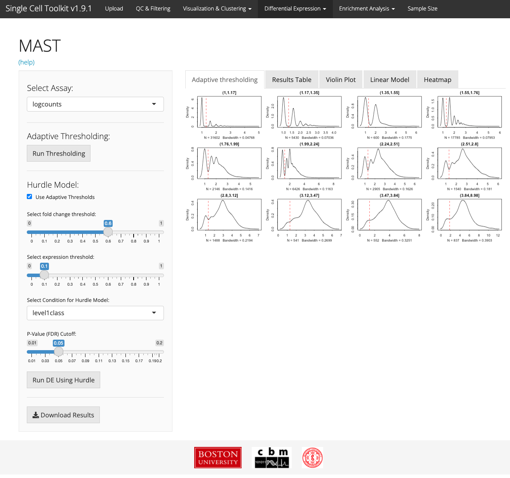

Differential Expression Tab
Single Cell Toolkit
David Jenkins
The Section of Computational Biomedicine, Boston University School of Medicine, Boston, MA;Program in Bioinformatics, Boston University, Boston, MAdfj@bu.edu
Mohammed Muzamil Khan
The Section of Computational Biomedicine, Boston University School of Medicine, Boston, MA;Program in Bioinformatics, Boston University, Boston, MAmmkhan@bu.edu
Tyler Faits
The Section of Computational Biomedicine, Boston University School of Medicine, Boston, MAProgram in Bioinformatics, Boston University, Boston, MAW. Evan Johnson
The Section of Computational Biomedicine, Boston University School of Medicine, Boston, MAProgram in Bioinformatics, Boston University, Boston, MASource:
vignettes/v07-tab05_Differential-Expression.Rmd
v07-tab05_Differential-Expression.Rmd
Introduction
Differential expression analysis can identify genes that are significantly up or down regulated between conditions. While many differential expression algorithms exist, their performance may vary on scRNA-Seq datasets.
limma, DESeq2, and ANOVA
Users can apply common differential expression algorithms limma, DESeq2, or perform an ANOVA to identify differentially expressed genes by selecting one or multiple condition variables present in the annotation information. After choosing the assay of interest using the “Select Assay” field and the algorithm in the “Select Method” field, choose the experimental condition and any additional covariates to use in the differential expression model. The resulting genes will be differentially expressed between the factor of interest and all other cells. Users can also add addition covariates to control for in the model and customize the differential expression results by changing p-value correction method applied to the results.
Visualization

The resulting gene list is displayed as a table in the “Results Table” tab and also in a heatmap in the “Heatmap” tab, which can also be customized using the options available in the “Options” tab. Users can download the gene list directly or create a biomarker list for a specific cell type or cell cluster, which can be stored in the gene annotation information in the SCExperiment object.
MAST

MAST, Model-based Analysis of Single-cell Transcriptomics, is a differential expression analysis tool specifically designed for single cell RNA-Seq data, which uses a hurdle model to account for the missingness in scRNA-Seq data. MAST has been implemented within the SCTK. Users can choose whether to use MAST’s adaptive thresholding model, choose fold change and expression thresholds, and identify significant genes based on conditions present in the annotation information provided. The results are presented in a table, violin plots, or visualized in a heatmap. For detailed information about MAST analysis, see the MAST documentation.


Saving and Downloading Results
After differential expression analysis has been performed, there are several convenient options for downstream usage of the results. If desired, the entire resulting analysis can be stored in the SCExperiment object for future use. The user can access these results in the “Saved Results” button at the top of the “Options” panel.

The user can also store the differential gene list, “Save to ‘N’ Signficant genes” for additional analysis or pathway enrichment analysis in other parts of the SCTK.
Finally, the results can be downloaded in .csv form for viewing and use outside the SCTK and outside of R.
Session info
## R version 4.1.2 (2021-11-01)
## Platform: x86_64-apple-darwin17.0 (64-bit)
## Running under: macOS Big Sur 10.16
##
## Matrix products: default
## BLAS: /Library/Frameworks/R.framework/Versions/4.1/Resources/lib/libRblas.0.dylib
## LAPACK: /Library/Frameworks/R.framework/Versions/4.1/Resources/lib/libRlapack.dylib
##
## locale:
## [1] en_US.UTF-8/en_US.UTF-8/en_US.UTF-8/C/en_US.UTF-8/en_US.UTF-8
##
## attached base packages:
## [1] stats graphics grDevices utils datasets methods base
##
## other attached packages:
## [1] BiocStyle_2.22.0
##
## loaded via a namespace (and not attached):
## [1] rstudioapi_0.13 knitr_1.38 magrittr_2.0.3
## [4] R6_2.5.1 ragg_1.2.2 rlang_1.0.2
## [7] fastmap_1.1.0 stringr_1.4.0 tools_4.1.2
## [10] xfun_0.30 cli_3.2.0 jquerylib_0.1.4
## [13] systemfonts_1.0.4 htmltools_0.5.2 yaml_2.3.5
## [16] digest_0.6.29 rprojroot_2.0.3 pkgdown_2.0.2
## [19] bookdown_0.25 textshaping_0.3.6 BiocManager_1.30.16
## [22] purrr_0.3.4 sass_0.4.1 fs_1.5.2
## [25] memoise_2.0.1 cachem_1.0.6 evaluate_0.15
## [28] rmarkdown_2.14 stringi_1.7.6 compiler_4.1.2
## [31] bslib_0.3.1 desc_1.4.1 jsonlite_1.8.0